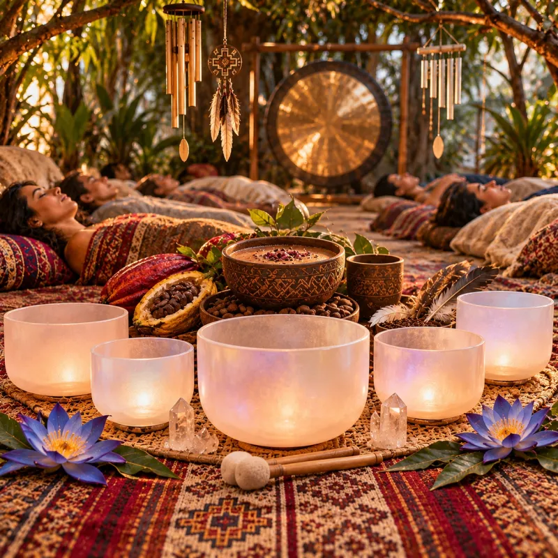

Cacao · Sound · Gathering
Cacao ceremonies in Sydney
Cacao ceremonies and shamanic sound journeys for private events, baby showers and corporate events.

What is a cacao ceremony?
A cacao ceremony usually begins with a circle, a welcome and a moment to set an intention. Ceremonial-grade cacao is then prepared and shared, and the group spends time in quiet reflection. Cacao is native to the Americas and has a long ceremonial history there.
Vanessa brings the Andean training behind her work to the space, including gratitude, reciprocity (Ayni) and respect for the elements and Pachamama, Mother Earth. Vanessa “Yana Kuntur” Black Condor is a Sydney-based practitioner of Inca medicine and Q’ero-inspired energy work. She has seven years of training and experience in South American ancestral medicines, including six years of study with the Apaza family at the Inca Medicine School in Cusco, Peru. She is a co-founder of the Paco Shaman Association, registered in 2022, and is certified by the Waira Qeros Peruvian Paco Shaman Association.
Shamanic sound journeys
A sound journey invites guests to settle in comfortably and listen while Vanessa plays. It can be paired with a cacao ceremony or offered on its own, so the gathering has a slower, more reflective pace.
For private events, baby showers and corporate events
Private gatherings
A shared ceremony can give a small gathering of friends or family a different kind of time together.
Baby showers
A cacao ceremony is a warm, reflective way to gather around a baby shower, with a shared moment of reflection and intention.
Corporate events
For teams, a ceremony offers a shared experience away from the usual agenda. It is a pause in the day rather than a meeting.
What to expect
Expect a welcome, a short explanation of the ceremony, cacao shared by the group, and quiet time or sound. You do not need to have attended a ceremony before, and guests can take part at their own pace. When you enquire, Vanessa can talk through your group, venue and timing.
Events run in Sydney.
Frequently asked questions
What is ceremonial cacao?
Ceremonial-grade cacao is a minimally processed form of the cacao bean, prepared as a drink. It is shared in a ceremony with intention-setting and quiet reflection.
Can you come to our venue?
Venue, group size and timing can be discussed when you enquire. Vanessa is based in Sydney.
Do guests need experience with ceremony?
No. Everyone is welcome to join at their own pace, and the ceremony is explained as it begins.
Is cacao suitable for everyone?
Cacao is a food and contains naturally occurring stimulants. If you have allergies, dietary needs or health questions, check with your own health professional and mention them when you enquire.
Can a sound journey be offered without cacao?
Yes. Cacao ceremonies and shamanic sound journeys can be offered together or separately. Ask when you enquire.
How do I enquire about an event?
Use the button on this page to go to the booking page and choose the corporate and private events option.
These sessions are spiritual and cultural practices, not medical or psychological treatment. If you are in crisis, call 000 or Lifeline on 13 11 14.
Other offerings
- Shamanic healing in Sydney Personal consultation, spiritual counselling and Chumpi realignment
- Shamanic sound bath in Sydney A 50-minute crystal bowl session
- Shaman training and incense workshops Q’ero Ñusta/Paqo training and Karpay
- All offerings See everything on the homepage
Read more
- What happens at a cacao ceremony? The usual flow, what to bring and who should check with a doctor first
Begin with a conversation
Your next step can
be a gentle one.
Choose a service to see its current price, duration and available times. Bookings are handled through Acuity Scheduling.
Enquire about an event IN PERSON IN SYDNEY · WORKSHOPS IN AUSTRALIA & PERU